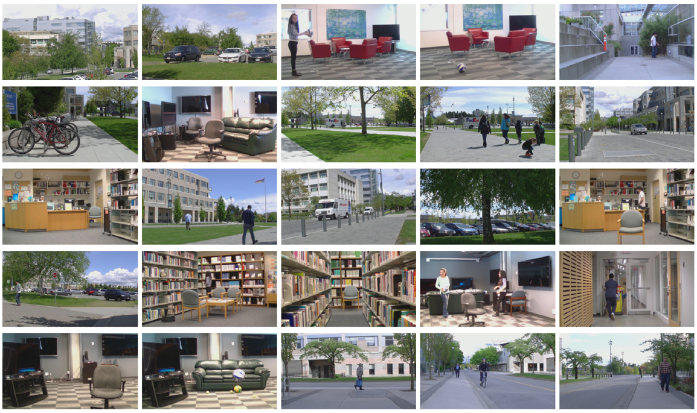
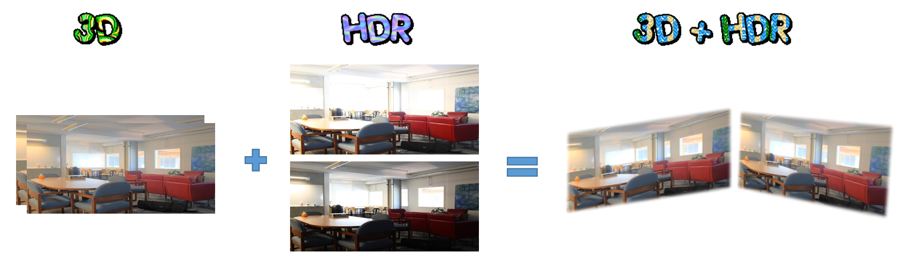

Amin Banitalebi Dehkordi, PhD
(Amin Banitalebi)
(Amin Banitalebi)
Links
DATABASES
This page contains various video databases that I've captured, post-processed, and made publicly available.
DML-iTrack-3D:
DML-iTrack-3D: 3D (and also 2D) Video Database and Corresponding Eye-tracking Data
DML-iTrack-3D dataset contains the eye-tracking data of 61 stereoscopic 3D sequences collected from 24 subjects. 27 videos are marked as the "training" videos
and their corresponding fixation maps are available to download. The rest of the videos (34) are marked as the "validation" set and are used for performance
evaluations. The fixation maps of the validation set is not made publicly available to conduct a fair comparison among the performance of various visual attention
models.
Note: In addition to eye-tracking dataset (fixation maps) of stereo videos, we also provide the fixation maps of a 2D video dataset that corresponds to one view
of the 3D datasets (through a separate set of experiments), and thus can be perfectly used as a 2D video eye-tracking database. This also helps for studies that
aim to compare 2D and 3D eye gaze behaviour.
Disclaimer: This data set is free to be used for any non-commercial purposes.
Please cite the following papers if you are using this database for your research.
* Amin Banitalebi-Dehkordi, Eleni Nasiopoulos, Mahsa T. Pourazad, and Panos Nasiopoulos, "Benchmark three-dimensional eye-tracking dataset for visual saliency
prediction on stereoscopic three-dimensional video," J. Electron. Imaging. 25 (1), 013008 (January 14, 2016); doi: 10.1117/1.JEI.25.1.013008. pdf - published
Download:
Download from: http://dml.ece.ubc.ca/data/DML-iTrack-3D/
Training Sequences: Videos (YUV 4:2:0) 45.3 GB Depth Maps 22.6 GB Fixation Maps: 2D 22.6 GB 3D 22.6 GB
Validation Sequences: Videos (YUV 4:2:0) 58.0 GB Depth Maps 29.0 GB Fixation Maps: 2D 29.0 GB 3D 29.0 GB
Download Mirror (in single video files):
Training Sequences: Videos (part1 part2 part3 part4) Depth Maps (part1 part2 part3) Fixation Maps: 2D (part1 part2) 3D (part1 part2)
Validation Sequences: Videos (part1 part2 part3 part4 part5) Depth Maps (part1 part2 part3) Fixation Maps: 3D (part1 part2) 3D (part1 part2)
Benchmark test results: available here
DML-iTrack-HDR:
High Dynamic Range (HDR) video database along with their eye-tracking data
DML-iTrack-HDR is an eye-tracking database of HDR videos. All video sequences and HDR fixation maps are available to download. This dataset will particularly be
useful to study visual attention modeling of HDR video/image data.
* Disclaimer: This data set is free to be used for any non-commercial purposes.
Please cite any of the following papers, that is more appropriate, if you are using this database for your research.
* A. Banitalebi-Dehkordi, Y. Dong, M. T. Pourazad, and P. Nasiopoulos, "A Learning Based Visual Saliency Fusion Model For High Dynamic Range Video (LBVS-
HDR)," 23rd European Signal Processing Conference, EUSIPCO 2015. pdf - published version
* A. Banitalebi-Dehkordi, M. Azimi, M. T. Pourazad, and P. Nasiopoulos, "Visual saliency aided High Dynamic Range (HDR) video quality metrics," International
Conference on Communications (ICC), 2016. pdf - published version
* Amin Banitalebi-Dehkordi, Maryam Azimi, Mahsa T. Pourazad, and Panos Nasiopoulos, "Saliency-Aided HDR Quality Metrics," ISO/IEC JTC1/SC29/WG11
MPEG2014/m37317, Oct. 2015, Geneva, Switzerland. pdf - published version
Download:
Download from: http://dml.ece.ubc.ca/data/DML-iTrack-HDR/
Note: All eye-tracking data can be downloaded from the above link. However, please note that some of the videos in this database have third party copyrights
so we'd be able to provide links to the original producers. Information regarding those videos can be found here. The rest of the videos can be downloaded freely
from DML-HDR database available at the current page and also here.
Download Mirror (in single video files):
Download: here
DML-LBVS-HDR:
Saliency maps produced by LBVS-HDR visual attention model
LBVS-HDR is a Learning Based Visual Saliency detection model for High Dynamic Range video. As HDR video is paving its ways through the cosumer market and
academic research community, having a database of HDR visual attention modeling eye tracking data and visual attention models (VAMs) is essential. As we
mentioned above, DML-iTrack-HDR is an eye-tracking database for HDR video. LBVS-HDR is a state-of-the-art VAM for HDR video. We provide, here, the saliency
maps produced by LBVS-HDR VAM so it can be used for benchmarking purposes.
Disclaimer: This data set is free to be used for any non-commercial purposes.
Please cite the following papers if you are using this database for your research.
* Amin Banitalebi-Dehkordi, Y. Dong, Mahsa T. Pourazad, and Panos Nasiopoulos, "A Learning Based Visual Saliency Fusion Model For High Dynamic Range Video
(LBVS-HDR)," 23rd European Signal Processing Conference, EUSIPCO 2015. pdf - published version
Download:
Download from: http://dml.ece.ubc.ca/data/LBVS-HDR/
Download Mirror: (in single video files): here
DML-3D-HFR:
High Frame Rate, High Quality (uncompressed), 3D video database
The followings are links to our 3D video data sets, which were used to study the effect of frame rate on 3D video Quality of Experience and Bit Rate. The data set
contains 5 videos of the same scene with different frame rates of 24, 30, 48, and 60 fps.
Disclaimer: This data set is free to be used for any non-commercial purposes.
Please cite the following papers if you are using this database for your research.
* Amin Banitalebi-Dehkordi, Mahsa T. Pourazad, and Panos Nasiopoulos, "The effect of frame rate on 3D video quality and bitrate," Springer Journal of 3D
Research, vol. 6:1, pp. 5-34, March 2015, DOI 10.1007/s13319-014-0034-3. pdf - published version
* Amin Banitalebi-Dehkordi, Mahsa T. Pourazad, and Panos Nasiopoulos, "Effect of High Frame Rates on 3D video quality of experience," 32nd International
Conference on Consumer Electronics, ICCE, Jan. 2014, Las Vegas, US. pdf - published version
Download
Download from: http://dml.ece.ubc.ca/data/framerate/
DML-HDR:
High quality uncompressed HDR video database
The followings are links to our High Dynamic Range (DML-HDR) video data sets, which were used in our study to evaluate various HDR image and video quality
metrics. DML-HDR database includes five videos with different characteristic, which are captured by a RED SCARLET-X camera capable of capturing HDR motion
footage. Each video sequence is approximately 10 seconds long with frame rate of 30 frames per second (fps) and resolution of 2048x1080. The data set contains
5 HDR videos in two different formats:
1) For each video, frames are stored in ".hdr" format. There are many software programs that can read and open this image format, for example "MATLAB" or
"Picturenaut". RGBE is a lossless HDR video format, where each pixel value consists of one byte for red mantissa, one bite for green mantissa, one for the blue
mantissa, and one bite for a common exponent.
2) Each video is converted to a "YUV" 12-bit file. YUV 12 bit format consists of three channels, Y for luma and U and V for Chroma. Each channel is represented by
integer values between 0 and 4095 (12 bits). The process of generating the YUV files is described in our paper. "PYUV" is a typical software to read these files.
Note that since conversion from the original HDR videos to YUV format results in loss of information and also color space conversion is applied in this process, we
encourage using the ".hdr" file format rather than "YUV" ones.
Disclaimer: This data set is free to be used for any non-commercial purposes.
Please cite the following papers if you are using this database for your research.
* Maryam Azimi, Amin Banitalebi-Dehkordi, Yuanyuan Dong, Mahsa T. Pourazad, and Panos Nasiopoulos, "Evaluating the Performance of Existing Full-Reference
Quality Metrics on High Dynamic Range (HDR) Video Content," ICMSP 2014: XII International Conference on Multimedia Signal Processing, Nov. 2014, Venice, Italy.
* Amin Banitalebi-Dehkordi, Maryam Azimi, Mahsa T. Pourazad, and Panos Nasiopoulos, "High Dynamic Range Video Compression Using HEVC and H.264/AVC
Standards," 10th International Conference on Heterogeneous Networking for Quality, Reliability, Security and Robustness, QSHINE, Aug. 2014, Greece (invited
paper). pdf - published version
Download:
Downlaod from: http://dml.ece.ubc.ca/data/DML-HDR/
DML-3Dhdr:
High quality, uncompressed, rectified, and post-processed 3D-HDR video database
High Dynamic Range (HDR) displays and cameras are finding their ways through the consumer market, just a few years after 3D displays and cameras became
widely available. Soon both academia and industry will explore the commercialization of 3D-HDR content, displays, and cameras. 3D-HDR video will have a large
close-to-natural gamut of HDR video, while at the same time provides an impression of depth perception to the viewers. To assist the efforts to the research
community, we provide a freely available 3D-HDR video database called DML-3Dhdr.
DML-3Dhdr: Our database of Stereoscopic HDR (SHDR) videos that are captured from natural scenes, calibrated, and post-processed. The sequences in this
database are uncompressed, and come in HDR format for left-right views.
Please cite the following papers if you are using this database for your research:
* A. Banitalebi-Dehkordi, "Introducing a public Stereoscopic 3D High Dynamic Range (SHDR) video database," 3D Res (2017) 8: 3. doi:10.1007/s13319-017-0115-1.
Download
Copyright 2018 by "Amin Banitalebi" All Rights reserved E-Mail: amin[dot]banitalebi[at]gmail.com



